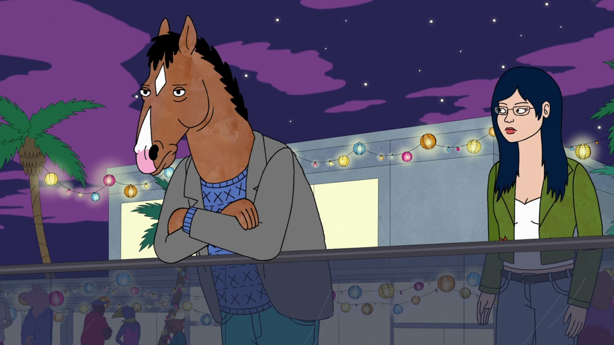
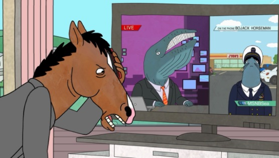
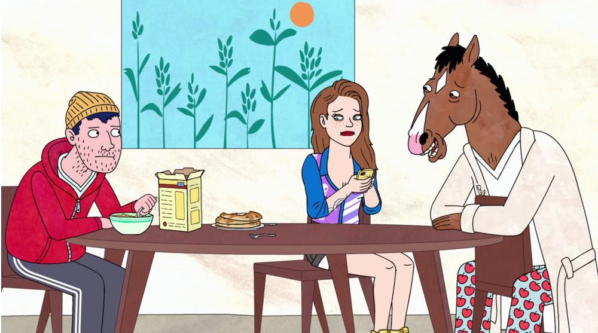

BoJack Horseman
Comedia oscura y drama profundo. Narra la vida de un caballo antropomórfico,
estrella de una telecomedia de los 90, que lucha contra la adicción,
la depresión y la autodestrucción mientras busca recuperar la fama
en Hollywood.
⭐ Calificación: 8.8/10


Capítulo 1
BoJack intenta volver a la fama mientras enfrenta problemas personales y recuerdos de su pasado.

Capítulo 2
La presión de Hollywood y sus relaciones comienzan a afectar su estabilidad emocional.

Capítulo 3
BoJack reflexiona sobre sus errores mientras intenta encontrar un propósito en su vida.